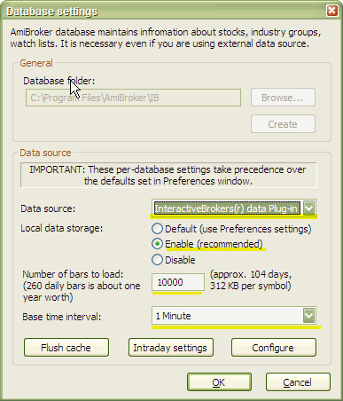
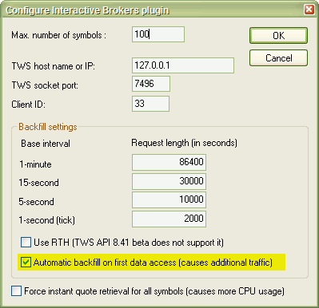
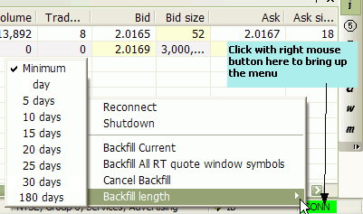
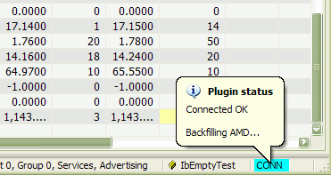

How to use AmiBroker with Interactive Brokers TWS
Note: the most recent version of this document can be found at: http://www.amibroker.com/ib.html. Please check this page for updates.
IB PLUGIN FEATURES SUMMARY:
-
supports up to 100 streaming symbols in real time (equal to IB TWS limit)
-
automatic connection (no need to manually "accept incoming connection" in TWS)
-
supports up to 30 DAYS intraday data BACKFILL in 1-minute bar interval
-
up to 2000 bars backfill using 1-second/5-second/15-second bar intervals
INSTRUCTIONS:
NOTE: Interactive
Brokers TWS is a CPU-hungry application; therefore, for best results, we
recommend using a machine with a 1GHz processor or faster.
NOTE 2: There is a VIDEO tutorial showing how to set it up at http://www.amibroker.com/video/ib.html
To use Interactive Brokers
data plugin with AmiBroker, you need to:
-
In TWS, select Configure -> API -> Enable ActiveX and Socket clients
Also, enter 127.0.0.1 in TWS, Configure->API->Trusted IP addresses menu to prevent "Allow incoming connection?" dialog. -
Run AmiBroker and create a new database with the Interactive Brokers plugin as a data source, following these steps:
Run AmiBroker
-
Choose File->New database
-
Type a new folder name (for example: C:\Program Files\AmiBroker\IB) and click Create as shown in the picture below:

-
Choose Interactive Brokers® data Plug-in from the Data source combo box and select "Enable" from Local data storage
-
Enter 30000 or more into "Number of bars to load" field
-
Now choose a Base time interval. Supported intervals are: EOD, hourly, 15-minute, 5-minute, 1-minute. The Professional Edition of AmiBroker also allows selecting Tick, 5-second, 15-second intervals.
Note that backfill is limited to a bar interval of 1-minute or less (TWS limitation).
If you want to have long daily histories AND intraday charts, you should consider running TWO instances of AmiBroker. One for EOD charts and a second for intraday charting. Both instances may use IB as a data source. -
Click OK.
From now on, your AmiBroker reads quotes directly from Interactive Brokers.
The backfill feature in plugin 1.3.7 allows downloading 24 units of intraday historical data to fill in gaps that may have occurred when AmiBroker / TWS is not running.
The IB Backfill feature is configurable from File->Database Settings, Configure:

Two main backfill-related settings are:
1. request length
2. automatic backfill
When request length is considered, as explained in TWS API Release Notes at: http://www.interactivebrokers.com/en/software/apiReleaseNotes/apiBetanotes.php, currently, the IB backfill feature is limited to some fixed duration / bar interval ranges. For example, you can get a maximum of 2000 1-second ticks, a maximum of 10000 seconds in a 5-second interval (2000 bars), a maximum of 30000 seconds in a 15-second interval (also 2000 bars), and a maximum of 5 DAYS of 1-minute bars.
By default, AmiBroker uses the maximum allowable amounts.
As for "automatic backfill on first data access" - when it is checked, AmiBroker attempts to backfill a symbol when you display a chart for a given symbol (or perform a backtest or scan). Please note that the TWS API currently allows only one backfill at a time, so when there is a backfill already running in the background, an automatic backfill request for the next symbol will be ignored until the previous backfill is complete.
It is convenient to have this option turned on; however, it can cause additional load on your internet connection because data needs to be downloaded during the backfill process.
If you switch "automatic backfill on first data access" option off, you will still be able to backfill data for the current symbol or all symbols in the real-time quote window list using appropriate menu options from the plugin's status menu.

Backfill Current option allows forcing a backfill of the currently selected symbol, while Backfill All RT quote window symbols allows forcing a backfill of all symbols listed in the Real-Time Quote window. The backfill of multiple symbols is performed sequentially (one at a time) due to limitations of TWS.
Backfill length submenu allows selecting the desired backfill length.
During backfilling, a tooltip pops up, informing the user about the symbol currently being backfilled, and the plugin status color changes to light blue (turquoise) as shown below:

BACKFILLING ALL SYMBOLS AT ONCE
To backfill all symbols at once, do the following:
1. Open the Realtime Quote window (by selecting Window->Realtime Quote menu)
2. Right-click on the Realtime Quote window and choose Add symbol / Add watch list / Type-in symbol to add any symbols you want to backfill.

3. Right-click on the plugin status indicator and select the desired Backfill length
4. Choose Backfill All RT quote window symbols option from the same menu.
Since Interactive Brokers severely limits the number of backfills that a customer may request within a given time, it is advised to use a backfill length as short as possible (e.g., 1-day or 5-day) and avoid long ranges like 30 days.
SYMBOLOGY
Symbol format now uses the symbol mode of TWS, not the underlying mode. The symbol mode in TWS can be seen in the 'View->Symbol Mode' menu option in TWS.
The format is: SYMBOL-EXCHANGE-TYPE
where
SYMBOL is the same as the symbol column as displayed in TWS when in symbol mode
EXCHANGE (optional) is the exchange displayed in TWS when in symbol mode
TYPE (optional) is one of the following:
STK - stocks, FUT -
futures, FOP - options on futures, OPT - options, IND - indexes, CASH - Cash
(Ideal FX)
Note that for stocks, only the EXCHANGE and TYPE fields are
optional. The exchange will be set to BEST (SMART) and the TYPE will be set
to STK.
Please take special
care when typing symbols, as some of them (futures) have MULTIPLE SPACES
in the symbol name. You have to type EXACTLY THE SAME number of spaces
as provided in the examples below
(see the dashes below the symbol name that make it easier to see the number of
characters)
Examples:
| IB SYMBOL | Type | Description |
CSCO |
Stock | Cisco Corporation, Nasdaq |
GE |
Stock | General Electric, NYSE |
VOD-LSE |
Stock | VODAFONE GROUP, London Stock Exchange |
ESM4-GLOBEX-FUT |
Future |
Emini ES Jun04 futures, Globex |
QQQFJ-CBOE-OPT |
Option | Jun 04, 36.0 CALL option QQQFJ |
INDU-NYSE-IND |
Index | Dow Jones Industrials Index |
YM JUN 04-ECBOT-FUT --- - |
Future | YM Jun 04 future,
ECBOT (Note 3 spaces between symbol and month and one space between month and year) |
QMN5-NYMEX-FUT |
Future | QM (Crude) June 2005 future contract, NYMEX |
XAUUSD-SMART-CMDTY |
Commodity | London Gold Spot |
IBUS500-SMART-CFD-USD
|
CFD (contract for difference) | IB US500 contract for difference |
EUR.USD-IDEAL-CASH EUR.USD-IDEALPRO-CASH |
Cash Forex | EURUSD currency
pair, IDEAL EURUSD currency pair, IDEALPRO |
Again:
ECBOT futures symbols have a length of 21 characters, with 3 spaces between the contract symbol and month name, and one space between the month and 2-digit year
| Contract | 3 spaces | Month | spa ce |
Year | - | E | C | B | O | T | - | F | U | T | ||||||
| Z | B | J | U | N | 0 | 4 | - | E | C | B | O | T | - | F | U | T | ||||
| Z | F | J | U | N | 0 | 4 | - | E | C | B | O | T | - | F | U | T | ||||
| Z | N | J | U | N | 0 | 4 | - | E | C | B | O | T | - | F | U | T | ||||
| Y | M | J | U | N | 0 | 4 | - | E | C | B | O | T | - | F | U | T | ||||
NOTES ON IB API LIMITATIONS:
1. Backfill is available for real IB accounts only (not for demo accounts)
2. Open price is NOT provided by IB. For that reason, the Open field is empty in the real-time quote window
3. The data from IB does not include a timestamp on the trades. The current system time is used to timestamp each tick.
4. IB TWS streaming data is NOT tick-by-tick, but rather 0.2-0.3-second snapshots. Read this for details: http://www.amibroker.com/cgi-bin/discus/board-auth.pl?file=/2/37364.html